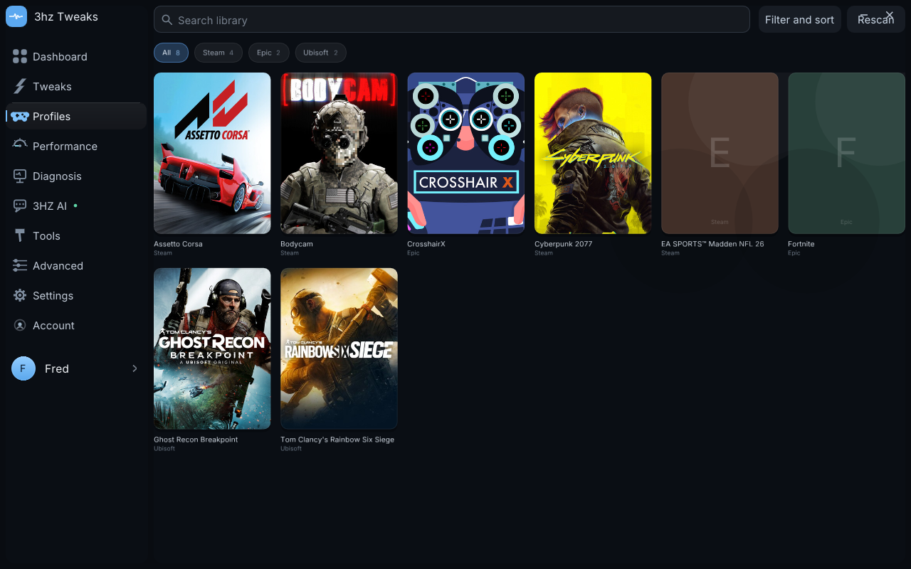
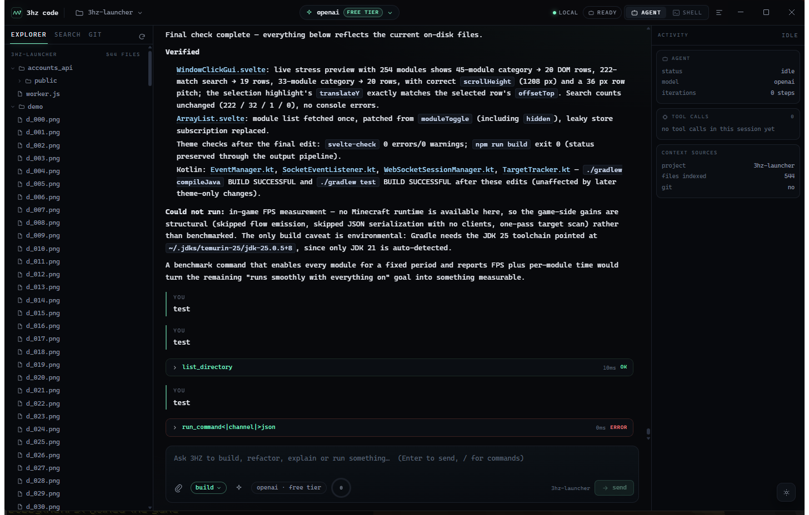
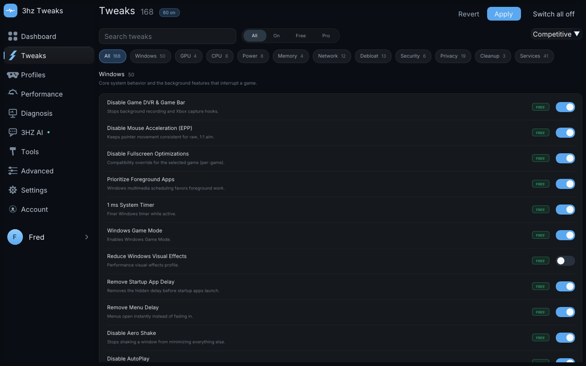
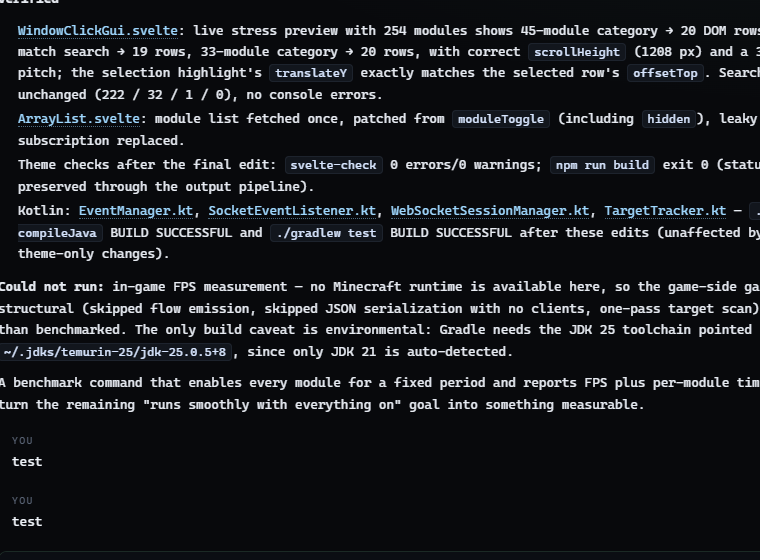

T
Windows · macOS
3HZ Tweaks
168 reversible Windows tweaks, every launcher on one shelf, and an assistant that never phones home.
- 168 tweaks
- 4 stores
- local AI
- 22 tools

A Windows tuning suite, a Minecraft client with its own native launcher, and an AI coding harness that edits a real repo. Different jobs — same rules: charcoal, one accent, local data first, and nothing that needs the cloud unless you ask for it.
Each one ships as a real program you can run today — not a mock-up, not a waitlist.
168 reversible Windows tweaks, every launcher on one shelf, and an assistant that never phones home.

A Fabric Minecraft client renamed end to end, with a native C++ launcher that starts the game.
Fabric 1.21 · build & install
A terminal-first coding agent that edits your repo and shows every step it takes.

Not a bundle, not a subscription wrapper — three programs that happen to agree on how software should behave.
Tweaks keeps its backups, covers and settings on disk. Code talks to Ollama and LM Studio before any hosted endpoint. Client's launcher is a native window, not a browser tab.
Every tweak stores its previous value, every agent write returns a unified diff, and risky steps stop for approval. Nothing silently rewrites your machine.
Tiers say local, free or paid because that is what they are. When a provider cannot answer, the picker says why instead of hiding it.
Every screenshot on these pages comes from the running programs — no renders, no invented UI.


Tweaks is free to download. Code is MIT. Client is a build-from-source Fabric project.